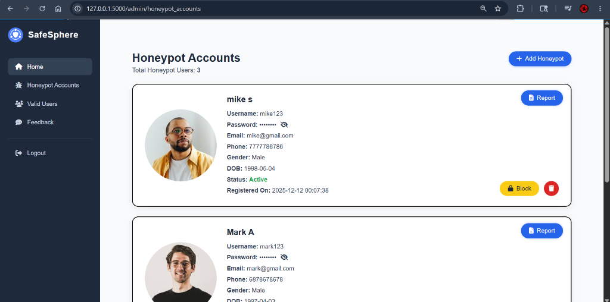
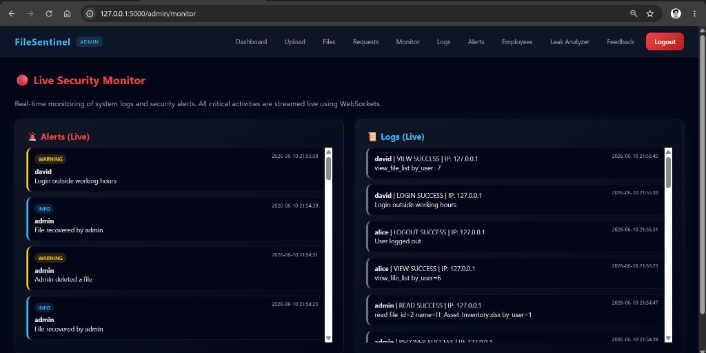
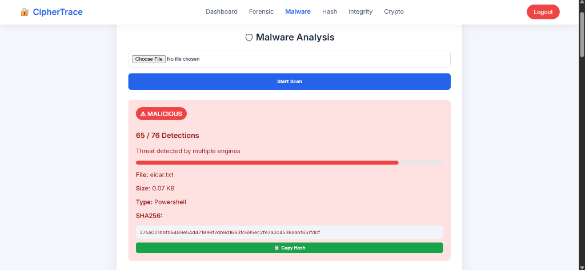
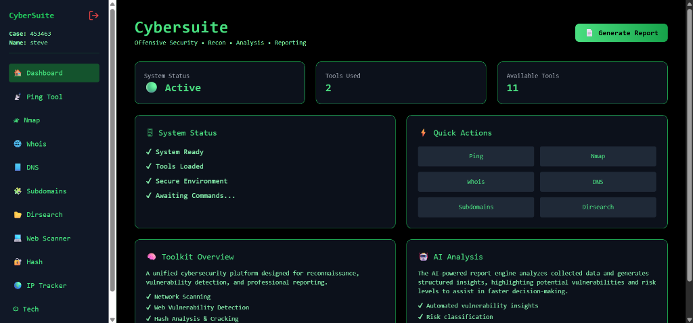

M.Sc. Cyber Forensics postgraduate (University 2nd Rank) and Cyber Security Faculty Intern defending networks through SIEM log analysis, threat detection, disk forensics, and offensive web security testing.
Specializing in end-to-end incident investigation, threat telemetry correlation, and adversary profiling. Combined academic excellence (University 2nd Rank in M.Sc. Cyber Forensics) with frontline training experience at Blitz Academy Kochi—educating upcoming professionals in live CEH attack simulations and enterprise SOC incident response.
Security is not merely detection—it is unshakeable evidentiary proof, rigorous timeline reconstruction, and proactive adversary deception.
Real-time log ingestion, correlation rule tuning, brute-force detection, and incident escalation using enterprise SIEM and endpoint monitoring pipelines. Skilled at building custom dashboards and writing detection rules that cut false-positive noise while surfacing genuine threats across distributed systems.
Forensic disk imaging in RAW, E01, and AFF formats with cryptographic hash verification (MD5/SHA-256), deleted file recovery, artifact timeline reconstruction, and court-ready forensic documentation. Experienced in preserving chain of custody and generating legally admissible evidence reports for incident investigations.
Deep packet inspection to uncover anomalous C2 beacons, port scans, credential leaks, and exposed services across enterprise networks. Proficient in building network baselines, identifying lateral movement, analyzing PCAP captures, and pinpointing zero-day exposure vectors.
Intercepting, fuzzing, and auditing web applications against OWASP Top 10 flaws including authentication bypasses, SQL injection, cross-site scripting (XSS), and directory traversal. Hands-on experience with manual testing methodologies combined with automated scanning for comprehensive vulnerability remediation.
Delivering hands-on CEH and SOC training sessions at Blitz Academy Kochi—guiding students through live attack simulations, SIEM log triage, and forensic investigations. Creating realistic virtual lab environments that replicate modern red/blue team engagements for applied practical learning.
Specialized software, defensive platforms, and offensive utilities battle-tested across incident triage, live forensics cases, and penetration audits.
Enterprise-grade log correlation, custom dashboards, real-time threat alert indexing across distributed infrastructure.
Unified XDR/HIDS platform managing endpoint telemetry, file integrity checks, compliance, and threat mitigation.
Deep packet inspection, protocol dissection, anomalous stream extraction, and covert C2 channel discovery.
Tactical network mapping, active service fingerprinting, OS detection, and port scanning via NSE scripts.
HTTP request proxy interception, fuzzing, parameter tampering, and OWASP Top 10 vulnerability verification.
Open-source forensic platform for disk image examination, artifact recovery, and event timeline sequencing.
Forensic disk acquisition in E01, RAW, and AFF formats with automatic cryptographic MD5/SHA integrity hashes.
Premier offensive security distribution equipped with full toolchains for red teaming and vulnerability discovery.
Custom defensive scripts, log parsers, forensic watermark embedding, and automated forensic PDF generators.
Exploit verification, payload simulation, post-exploitation assessment, and defense validation testing.
Multi-engine malware intelligence aggregating detection results across 70+ industry-standard antivirus engines.
High-speed GPU-accelerated hash cracking, password audit verification, and key recovery operations.




Advanced phishing deception framework utilizing dynamic honeypot traps and synthetic decoy credentials to lure, trace, and profile adversary credential harvesting campaigns. Maps live threat telemetry against MITRE ATT&CK TTPs in real time.
Enterprise file integrity and insider threat detection engine streaming live security telemetry via WebSockets. Incorporates invisible document watermarking to trace leaked intellectual property back to the exact unauthorized account.
Automated forensic file investigation utility executing multi-algorithm cryptographic verification (MD5, SHA-256), static binary malware triage with VirusTotal API scoring, file encryption/decryption, and automated forensic PDF reports.
Unified offensive and defensive intelligence cockpit uniting Nmap port discovery, Dirsearch endpoint enumeration, and cryptographic hashing into an interactive HUD with AI-driven risk scoring and topology export.